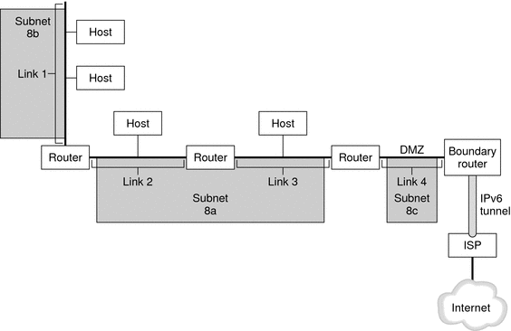

|
|||
|
1. Solaris TCPIP Protocol Suite (Overview) 2. Planning an IPv4 Addressing Scheme (Tasks 3. Planning an IPv6 Addressing Scheme (Overview) IPv6 Neighbor Discovery Protocol Overview IPv6 Address Autoconfiguration 4. Planning an IPv6 Network (Tasks) 5. Configuring TCP/IP Network Services and IPv4 Addressing (Tasks) 6. Administering Network Interfaces (Tasks) 7. Enabling IPv6 on a Network (Tasks) 8. Administering a TCP/IP Network (Tasks) 9. Troubleshooting Network Problems (Tasks) 10. TCP/IP and IPv4 in Depth (Reference) 12. About Solaris DHCP (Overview) 13. Planning for DHCP Service (Tasks) 14. Configuring the DHCP Service (Tasks) 15. Administering DHCP (Tasks) 16. Configuring and Administering DHCP Clients 17. Troubleshooting DHCP (Reference) 18. DHCP Commands and Files (Reference) 19. IP Security Architecture (Overview) 21. IP Security Architecture (Reference) 22. Internet Key Exchange (Overview) 24. Internet Key Exchange (Reference) 25. Solaris IP Filter (Overview) 28. Administering Mobile IP (Tasks) 29. Mobile IP Files and Commands (Reference) 30. Introducing IPMP (Overview) 31. Administering IPMP (Tasks) Part VI IP Quality of Service (IPQoS) 32. Introducing IPQoS (Overview) 33. Planning for an IPQoS-Enabled Network (Tasks) 34. Creating the IPQoS Configuration File (Tasks) 35. Starting and Maintaining IPQoS (Tasks) 36. Using Flow Accounting and Statistics Gathering (Tasks) |
IPv6 Network OverviewThis section introduces terms that are fundamental to the IPv6 network topology. The following figure shows the basic parts of an IPv6 network. Figure 3-1 Basic Components of an IPv6 NetworkThe figure depicts an IPv6 network and its connection to an ISP. The internal network consists of Links 1, 2, 3, and 4. Each link is populated by hosts and terminated by a router. Link 4, which is the network's DMZ, is terminated on one end by the boundary router. The boundary router runs an IPv6 tunnel to an ISP, which provides Internet connectivity for the network. Links 2 and 3 are administered as Subnet 8a. Subnet 8b consists only of systems on Link 1. Subnet 8c is contiguous with the DMZ on Link 4. As illustrated in Figure 3-1, an IPv6 network has essentially the same components as an IPv4 network. However, IPv6 terminology differs slightly from IPv4 terminology. Here is a list of familiar terms for network components as they are used in an IPv6 context.
|
||
|